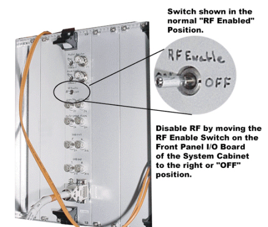
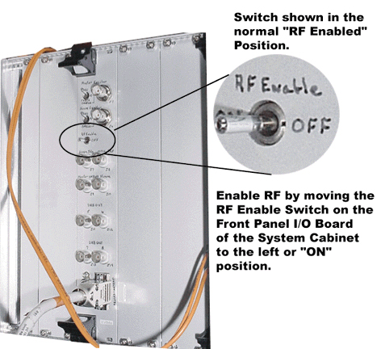
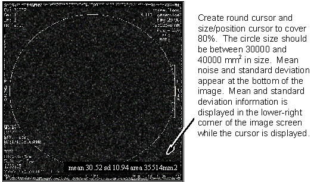

Operating Documentation
Direction 5133315-3, Rev# 14
Signa EXCITE HD 1.5T Service Methods
Module Version 1.0, Version Date 5/3/07
Operating Documentation |
| Required Persons | Preliminary Reqs | Procedure | Finalization |
|---|---|---|---|
| 1 | Not Applicable | 30 mins | Not Applicable |
The Noise Floor Test uses a fast scan sequence without phantoms. The scan is performed first with the head coil then with the body coil.
| NOTE: | Starting with Signa Revision MGD/10.x, a scan cannot be started setup with RF disabled. Only after a new scan protocol has been downloaded or [Set Scan] button pushed can RF be shut down. During download of a protocol a calibration is done that requires RF enabled. If disabled, Signa will report a diagnostic failure. |
| Condition | Reference | Effectivity |
|---|---|---|
SNR scans and image analysis must be complete. SNR signal data recorded earlier will be used in this procedure to calculate test gain. | - | - |
System Gain Calibration procedure was previously done (so the system has calibrated gain). | - | - |
Remove front cover panel from system cabinet.
On the Front Panel I/O Board, find the RF output switch. (See Illustration 1 for RF Enable switch location). Do not disable RF at this time. During scan download Signa does some RF Calibrations that require RF to be enabled. You will disable RF Later in the process.
Illustration 1: DISABLING RF OUTPUT

At the Operator Workspace, select the scan icon in the desktop control panel.
If necessary, exit out of any previous exams by selecting [End Exam].
Click on [New Pt] and enter the following:
Id: geservice
Name: noise floor
Weight (Lb.): 111
Remove all phantoms from the patient table. This is an empty bore test.
Install head coil. LANDMARK on center of empty head coil. Then, press MOVE TO SCAN.
At the Operator Workspace, prepare the system for a “Noise Floor - Head” scan.
Click on [Save Series]. At this point disable the RF output by going to the front panel I/O board and moving RF enable switch to OFF. Refer back to Illustration 1 for switch position.
Click the [Manual Prescan] button.
Set R1 = 11, R2 = 15, TG = 0. Record these values and the system frequency in the Data Sheets.
Click on [Done], then [Scan].
After the scan is complete, press BACK TO ALIGN on the magnet front enclosure. When table is back at the landmark position, remove head coil from bore, and then press MOVE TO SCAN.
Insure that the RF Enable switch on front of the system cabinet front panel I/O board is in the ON position. See Illustration 2
Illustration 2: ENABLING RF OUTPUT

Click on [New Series] and enter the following:
Id: geservice
Name: noise floor
Weight (Lb.): 111
At the Operator Workspace, prepare the system for a “Noise Floor - Body” scan.
Click on [Save Series] and then [Prepare for Scan] At this point disable the RF output by going to the front panel I/O board and moving RF enable switch to OFF. Refer back to Illustration 1 for switch position.
Click the [Manual Prescan] button.
Verify or set R1 = 11, R2 = 15, TG = 0. Record these values and the system frequency in the Data Sheets.
Click on [Done], then [Scan]. After scan is complete, proceed to the next section.
Go to the Image Management Desk Top and select [Service Browser]. Select the noise floor check exam for the Diag Tab.
Select the image from Series # 1 (head coil image) by clicking on [Viewer].
3. Select [Measure]. Create a round cursor and size/position cursor to cover 80% of the displayed image (screen). See Illustration 3. The ROI area should be between 30000 and 40000 mm2. If it is not, resize to at least 30000 mm2.
Illustration 3: ROI SIZE FOR NOISE FLOOR ANALYSIS

Record standard deviation and mean noise values in the Data Sheet, under Head Image Data.
Compare noise values to acceptance spec value in the Data Sheet. (For a system with calibrated gain, calibrated noise = mean noise value).
Display image from Series # 2 (body coil image).
Create a round cursor and size/position cursor to cover 80% of the displayed image. See Illustration 3. The ROI area should be between 30,000 and 40,000 mm2. If it is not, resize to at least 30000 mm2.
Record standard deviation and mean noise values in Data Sheet, under Body Image Data.
Compare noise values to acceptance specification values in the Data Sheet.
Record results in Data Sheetof this document and store for future reference.
Restore the system by changing the RF Output switch located on the front panel I/O board on the front of the System Cabinet back to RF ON, NORMAL (see Illustration 4).
Illustration 4: ENABLING RF OUTPUT
Install front cover panel on system cabinet.
Do a check scan to insure proper system operations.